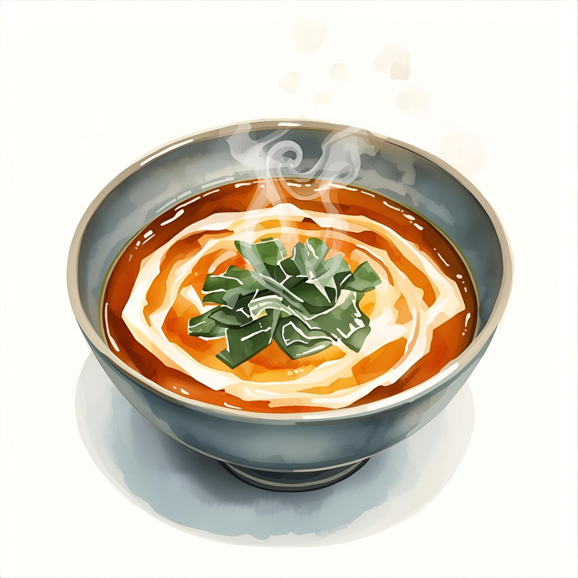

Home
Miso Soup

How to Make Miso Soup at Home: A Step-by-Step Guide
This page will provide you with a detailed, step-by-step guide on preparing miso soup in the comfort of your own home. Enjoy the process!
Ingredients
- 4 cups of water
- 2 teaspoons dashi granules
- 3 tablespoons miso paste
- 1 (8 ounce) package silken tofu, diced
- 2 green onions, sliced diagonally into 1/2 inch pieces
Steps
- Gather all ingredients.
- Combine water and dashi granules in a medium saucepan over medium-high heat; bring to a boil.
- Reduce heat to medium and whisk in miso paste.
- Stir in tofu.
- Separate the layers of green onions, and add them to the soup. Simmer gently for 2 to 3 minutes before serving.